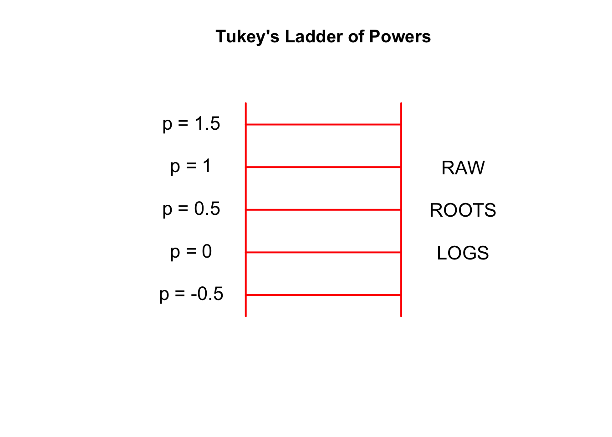
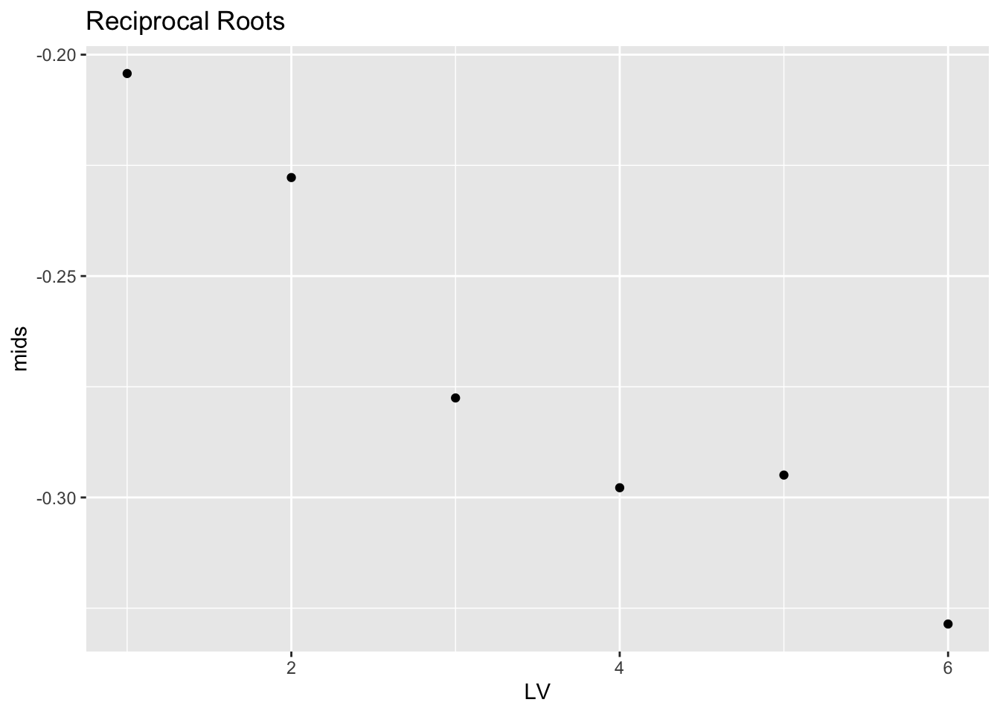

9 Reexpressing for Symmetry
9.1 Data for the day
There is a great variation in the care of infants across different countries. One way of measuring the quality of care of newborns is by the infant mortality rate, which is defined to be the number who die for each 1000 births. The dataset mortality.rate in the LearnEDA package gives the mortality rates (years 2005 to 2010) for 62 countries (Afghanistan through Ghana). (Data comes from page 493 from the 2010 New York Times Almanac.) Part of the dataset is displayed below.
library(LearnEDAfunctions)
library(tidyverse)
head(mortality.rates)## Country Rate
## 1 Afghanistan 157
## 2 Albania 16
## 3 Algeria 31
## 4 Angola 118
## 5 Argentina 13
## 6 Armenia 25Here is a stemplot of the raw data:
aplpack::stem.leaf(mortality.rates$Rate)## 1 | 2: represents 12
## leaf unit: 1
## n: 62
## 17 0 | 34444445556667899
## 26 1 | 000233679
## (7) 2 | 0123356
## 29 3 | 01556
## 24 4 | 35568
## 19 5 | 14
## 17 6 | 27
## 15 7 | 3799
## 11 8 | 0557
## 7 9 | 8
## 6 10 | 06
## 4 11 | 38
## 12 |
## 2 13 | 0
## HI: 157We see right-skewness in these data. Most of the mortality rates (corresponding to the more developed countries) are in the 0-30 range, and we notice several large rates (130, 157).
9.2 Why is this data hard to interpret?
When data is right or left skewed, then it is more difficult to analyze. Why?
- Most of the data is bunched up at one end of the distribution. This makes it hard to distinguish data values within the bunch.
- The presence of outliers distorts the graphical display. Because there are gaps at the high end, only a small part of the display contains a majority of the data.
- It is difficult to talk about an ``average” value, since it is not well-defined. The median and mean will be different values.
- It is harder to interpret a measure of spread like a standard deviation or fourth-spread when the data is skewed.
It is desirable to reexpress the data to make it more symmetric. We’ll accomplish this by a suitable choice of power transformation.
9.3 Checking for symmetry by looking at midsummaries
In checking for symmetry, it is useful to have some tools for detecting symmetry of a batch of numbers. One useful method looks at the sequence of midsummaries.
First, a midsummary (or mid for short) is the average of the two letter values. The first midsummary is the median \(M\). The next midsummary is the average of the fourths – we call this the midfourth:
\[
midfourth = \frac{F_U + F_L}{2}.
\]
Likewise, the mideighth is the average of the lower and upper eights, and so on. The R function lval from the LearnEDAfunctions package (illustrated here for the infant mortality data) shows the letter values and the corresponding mids:
(letter.values <- lval(mortality.rates$Rate))## depth lo hi mids spreads
## M 31.5 24 24.0 24.00 0.0
## H 16.0 9 67.0 38.00 58.0
## E 8.5 5 86.0 45.50 81.0
## D 4.5 4 109.5 56.75 105.5
## C 2.5 4 124.0 64.00 120.0
## B 1.0 3 157.0 80.00 154.0We can detect symmetry, or lack of symmetry, of a batch by looking at the sequence of midsummaries:
select(letter.values, mids)## mids
## M 24.00
## H 38.00
## E 45.50
## D 56.75
## C 64.00
## B 80.00If this sequence
- is increasing (like it is here), then this indicates right skewness
- is decreasing, we have left skewness
- doesn’t show any trend, then we have approximate symmetry
It is helpful to plot the midsummaries as a function of the letter value (Median is 1, Fourth is 2, etc). Clearly there is a positive trend in the plot, suggesting right skewness in the data.
letter.values %>% mutate(LV = 1:6) %>%
ggplot(aes(LV, mids)) +
geom_point() + ggtitle("Raw Data")
9.4 Reexpressing to achieve approximate symmetry
When we have skewness, then we move along the ladder of powers (of a power transformation) to look for a reexpression that will make the data set roughly symmetric. If we have right skewness (which is pretty common), then we move down the ladder of powers in our search for a good reexpression. Since the raw data is the \(p = 1\) transformation, we first take on step down on the ladder which corresponds to taking roots (\(p = 1/2\)).
We take roots of the data. Here is a stemplot, letter value display, and plot of the midsummaries for the roots:
roots <- sqrt(mortality.rates$Rate)
aplpack::stem.leaf(roots)## 1 | 2: represents 1.2
## leaf unit: 0.1
## n: 62
## 1 1 | 7
## 15 2 | 00000022244468
## 23 3 | 00111466
## (8) 4 | 01345677
## (6) 5 | 004599
## 25 6 | 057779
## 19 7 | 138
## 16 8 | 157889
## 10 9 | 2238
## 6 10 | 0268
## 2 11 | 4
## 1 12 | 5(root.lv <- lval(roots))## depth lo hi mids spreads
## M 31.5 4.897916 4.897916 4.897916 0.000000
## H 16.0 3.000000 8.185353 5.592676 5.185353
## E 8.5 2.236068 9.273462 5.754765 7.037394
## D 4.5 2.000000 10.462888 6.231444 8.462888
## C 2.5 2.000000 11.132267 6.566134 9.132267
## B 1.0 1.732051 12.529964 7.131007 10.797913root.lv %>% mutate(LV = 1:6) %>%
ggplot(aes(LV, mids)) +
geom_point() + ggtitle("Root Data")
Things have improved. Comparing the stemplot of the roots with the stemplot of the raw mortality rates, the roots look less skewed, suggesting that we are moving in the right direction on the ladder of powers. But the data set is not symmetric – this is confirmed by the plot of the midsummaries which shows a clear positive trend.
If we take another step down the ladder of powers, we arrive at logs \((p = 0)\). We display the stemplot, letter values, and plot of mids for the log mortality rates.
logs <- log(mortality.rates$Rate)
aplpack::stem.leaf(logs)## 1 | 2: represents 1.2
## leaf unit: 0.1
## n: 62
## 7 1* | 0333333
## 14 1. | 6667779
## 21 2* | 0113334
## 27 2. | 557899
## (8) 3* | 00112244
## 27 3. | 5557888899
## 17 4* | 1223333444
## 7 4. | 566778
## 1 5* | 0(logs.lv <- lval(logs))## depth lo hi mids spreads
## M 31.5 3.177185 3.177185 3.177185 0.000000
## H 16.0 2.197225 4.204693 3.200959 2.007468
## E 8.5 1.609438 4.454280 3.031859 2.844842
## D 4.5 1.386294 4.695413 3.040854 3.309119
## C 2.5 1.386294 4.819110 3.102702 3.432815
## B 1.0 1.098612 5.056246 3.077429 3.957634logs.lv %>% mutate(LV = 1:6) %>%
ggplot(aes(LV, mids)) +
geom_point() + ggtitle("Log Data")
Things look a bit better. The stemplot looks pretty symmetric to me. Looking at the plot of the mids, there is a decreasing trend for the first three points, and then the plot looks pretty constant. This means that there is some skewness in the middle portion of the logs, but there is little skewness in the tails (the tails are the extreme portions of the data).
If logs are a good reexpression, then it wouldn’t make any sense to go further down the ladder of powers. But let’s check and try taking a \(p = -1/2\) rexpression which corresponds to reciprocal roots (\(1 / \sqrt{mortality \, rate}\) ). Actually we take the reexpression \[ - \frac{1}{\sqrt{mortality \, rate}}. \] We do this since we want all of our power transformations to be increasing functions of our raw data.
Below we show the stemplot, the letter-value display, and the graph of the mids for the reciprocal roots.
recroots <- - 1 / sqrt(mortality.rates$Rate)
aplpack::stem.leaf(recroots)## 1 | 2: represents 0.12
## leaf unit: 0.01
## n: 62
## 1 -5. | 7
## 7 -5* | 000000
## -4. |
## 13 -4* | 444000
## 15 -3. | 75
## 20 -3* | 33111
## 24 -2. | 8775
## (8) -2* | 42211000
## 30 -1. | 9876665
## 23 -1* | 444443221111100000
## 5 -0. | 99987(recroots.lv <- lval(recroots))## depth lo hi mids spreads
## M 31.5 -0.2042572 -0.20425721 -0.2042572 0.0000000
## H 16.0 -0.3333333 -0.12216944 -0.2277514 0.2111639
## E 8.5 -0.4472136 -0.10783824 -0.2775259 0.3393754
## D 4.5 -0.5000000 -0.09560034 -0.2978002 0.4043997
## C 2.5 -0.5000000 -0.08988163 -0.2949408 0.4101184
## B 1.0 -0.5773503 -0.07980869 -0.3285795 0.4975416recroots.lv %>% mutate(LV = 1:6) %>%
ggplot(aes(LV, mids)) +
geom_point() + ggtitle("Reciprocal Roots")
Looking at the stemplot, the distribution of the reciprocal roots looks left-skewed. There is a negative trend in the midsummaries that confirms this left-skewness. (Actually the graph of the mids of the reciprocal roots looks similar to the graph of the mids of the logs. But I’m combining all of the information that we get from a visual scan of the stemplot and the midsummaries.)
So this analysis suggests that we should take the log of the mortality rates to achieve approximate symmetry.
9.5 Hinkley’s quick method
David Hinkley suggested a simple measure of asymmetry of a batch. This measure can be used together with the family of power transformations to suggest an appropriate reexpression.
He suggested looking at the statistic \[ d = \frac{\bar X - M}{measure \, of \, scale}, \] where \(\bar X\) is the mean, \(M\) is the median, and the denominator is any measure of scale of the batch. In the following, we will use the fourth-spread as our scale measure.
To interpret d …
- if d > 0, this indicates that the mean is larger than the median which reflects right-skewness of the batch
- if d < 0, this indicates left-skewness
- if d is approximately 0, then the batch appears roughly symmetric
For our batch of mortality rates, we can compute \[ \bar X = 39.80645, M = 24, d_F = F_U - F_L = 67 ??? 9 = 58 \] \[ d = \frac{39.80645 - 24}{58} = 0.2725, \] which indicates right-skewness in the batch.
As before, we move down the ladder of powers to suggest possible reexpressions. We use Hinkley’s statistic to measure the skewness in the reexpressed batch. We choose the value of the power p so that the value of the skewness measure d is approximately equal to 0.
Using the hinkley function, we compute Hinkley’s measure for the roots, logs, and reciprocal roots.
hinkley(roots)## h
## 0.1332907hinkley(logs)## h
## -0.02235429hinkley(recroots)## h
## -0.1950111Looking at the values of d, the ``correct” reexpression appears to be between \(p = .5\) (roots) and \(p = 0\) (logs), although the value closest to 0 corresponds to the log reexpression.
In practice, one uses Hinkley’s method together with other methods such as the midsummary approach to assess symmetry and find an appropriate choice of power transformation.